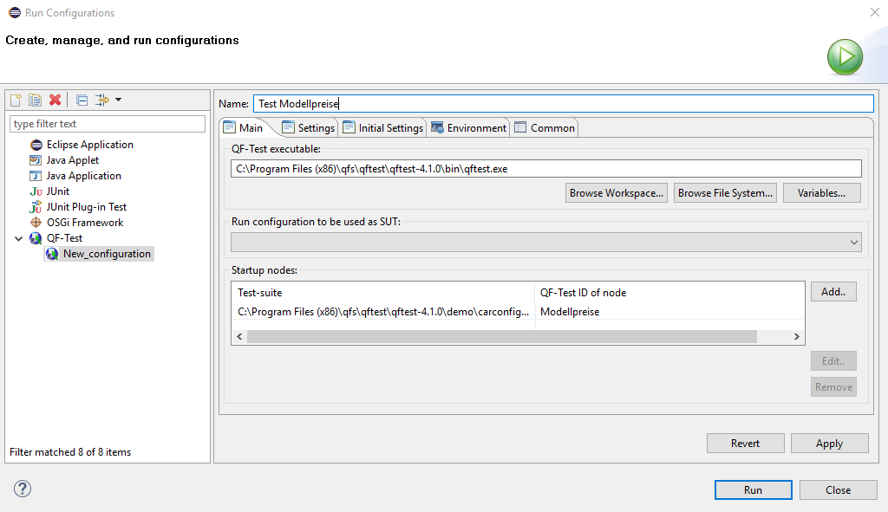
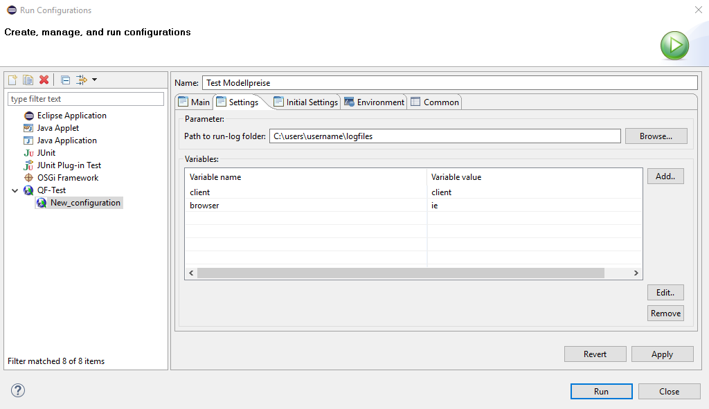
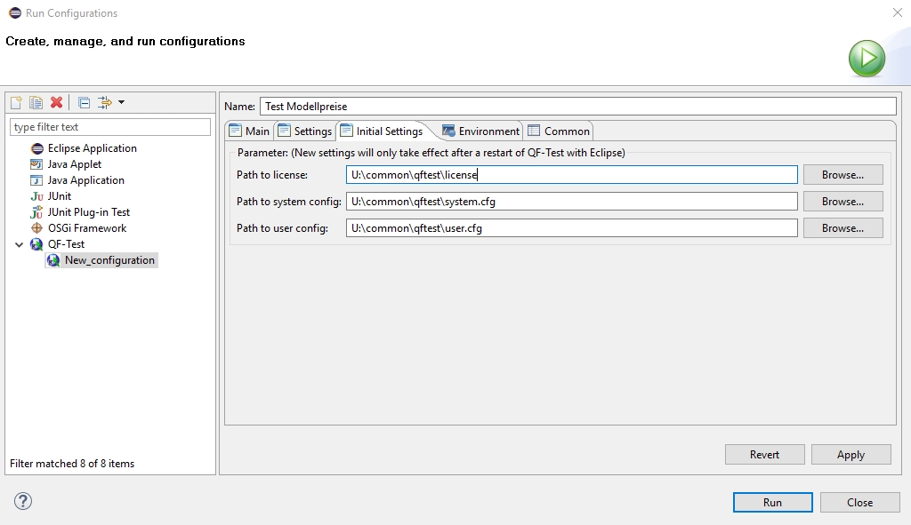

| Version 6.0.3 |
Eclipse (http://eclipse.org) ist eine Open Source Entwicklungsumgebung zur Erstellung von Java-Applikationen.
QF-Test bietet mit dem Eclipse Plugin die Möglichkeit, während der Entwicklung einer Java-Applikation diese aus Eclipse heraus zu starten und Tests darauf auszuführen. Dabei können beliebige QF-Test Knoten gestartet werden: z.B. ganze Testfallsätze, einzelne Testfälle oder auch nur ein Mausklick.
 Video-Anleitung: 'Das QF-Test Eclipse
Plugin'
Video-Anleitung: 'Das QF-Test Eclipse
Plugin'
Für die Installation des Eclipse Plugins kopieren Sie bitte die Datei
de.qfs.qftest_6.0.3.jar aus dem Unterverzeichnis qftest-6.0.3/misc/ des QF-Test
Installationsverzeichnisses in das Unterverzeichnis "dropins"
des Eclipse Installationsverzeichnisses. Nach dem (Neu-)Start von
Eclipse steht das Plugin zur Verfügung.
Öffnen Sie den Konfigurationsdialog über den Eclipse Menüpunkt »Run«-»Run Configurations«. Geben Sie die gewünschten Werte im Reiter "Main" und bei Bedarf in den Reitern "Settings" und "Initial Settings" ein. (Bei den Reitern "Environment" und "Common" handelt es sich um Eclipse Standardreiter, die für die Konfiguration des QF-Test Plugins nicht benötigt werden.)
Anschließend übernehmen Sie die Konfiguration mit "Apply". Gestartet wird mittels "Run".
|
|  | ||
|
| Abbildung 26.1: Eclipse Plugin Konfiguration - Reiter "Main" | ||
Im Feld "QF-Test executable" geben Sie "qftest.exe" inklusive Pfad an.
Z.B. C:\Program Files (x86)\qfs\qftest\qftest-4.1.0\bin\qftest.exe.
Das Feld "Run configuration to be used as SUT" ist optional. Hier kann eine in Eclipse angelegte "Run Configuration" angegeben werden, über die die zu testende Applikation gestartet wird. Bei Start der Applikation wird eine Verbindung zu QF-Test hergestellt, so dass Tests auf der Applikation abgespielt und auch Aufnahmen von Tests gemacht werden können. Dies ist hilfreich, wenn die unter "Startup nodes" konfigurierten QF-Test Knoten keine Startsequenz enthalten um die Applikation zu starten. Bitte beachten Sie dabei, dass die Ausführung der eingetragenen Run Configuration, die als SUT genutzt werden soll, angestoßen wird und sofort im Anschluss daran die Ausführung der aufgelisteten "Startup nodes" beginnt. Das hat zur Folge, dass im Test als erstes darauf gewartet werden sollte, dass der Client gestartet ist. D.h. entweder sollte im ersten "Startup node" der erste ausgeführte Knoten ein 'Warten auf Client' sein oder der erste "Startup node" sollte direkt einen 'Warten auf Client' Knoten in QF-Test ausführen.
In der Tabelle "Startup nodes" werden alle QF-Test Knoten eingetragen, die der Reihe nach ausgeführt werden soll. Ein Knoten werden anhand seiner 'QF-Test ID' identifiziert sowie der Testsuite, in der er sich befindet. Bitte beachten Sie, dass die 'QF-Test ID' ein eigenständiges Attribut des Knotens ist und nicht dessen Name. Dieses Attribut ist standardmäßig leer und muss eigens gesetzt werden.
|
|  | ||
|
| Abbildung 26.2: Eclipse Plugin Konfiguration - Reiter "Settings" | ||
Variablen in diesem Reiter werden vor jeder Ausführung der "Run Configuration" neu eingelesen.
Im Feld "Path to run-log folder" kann das Verzeichnis angegeben werden, in dem die Protokolle für Testläufe aus dieser Run Configuration abgelegt werden. Die Angabe ist optional. Falls kein Wert angegeben wird, greift der Wert, der in der QF-Test Systemkonfiguration gesetzt wurde.
In der Tabelle "Variables" können Variablen spezifiziert werden, die bei der Ausführung der Run Configuration auf Kommandozeilenebene an QF-Test übergeben werden. Damit können Default-Variablenwerte überschrieben werden, nicht jedoch im Test gesetzte globale oder lokale Variablen.
|
|  | ||
|
| Abbildung 26.3: Eclipse Plugin Konfiguration - Reiter "Initial Settings" | ||
Die Werte dieses Reiters sind optional und werden beim Start von QF-Test ausgewertet. Eine Änderung der Werte erfordert einen Neustart von QF-Test aus Eclipse heraus bevor sie greifen.
Path to license file: Pfad der zu verwendenden Lizenzdatei.
Path to qftest system config file: Pfad der zu verwendenden qftest.cfg Datei.
Path to qftest user config file: Pfad der zu verwendenden benutzerspezifischen Konfigurationsdatei.
| Letzte Änderung: 6.9.2022 Copyright © 1999-2022 Quality First Software GmbH |